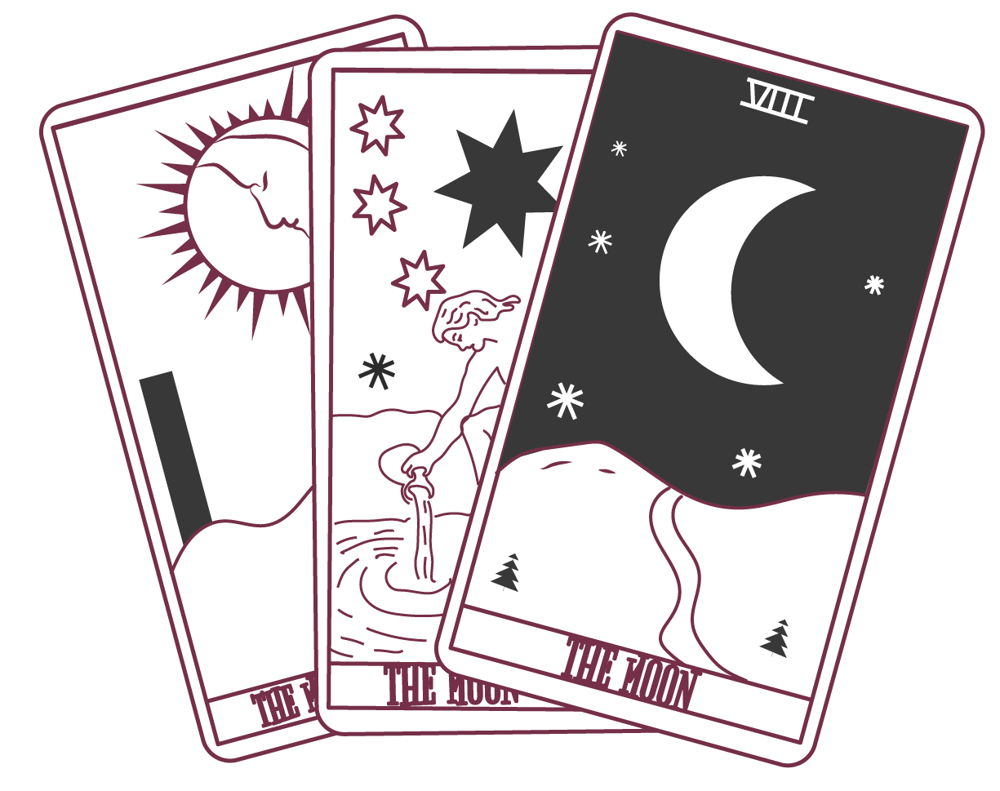
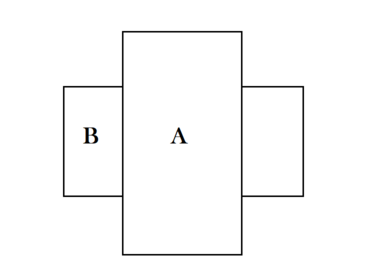
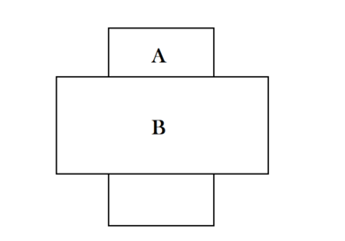
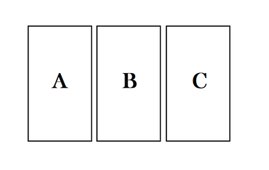

La mejor manera de memorizar el sentido de las cartas del Tarot es ponerlas en acción. Para esto, es necesario tener en cuenta ciertos puntos:
La numerología se despliega como una evolución del 1 al 10, agrupando a los arcanos en parejas arquetípicas. Cada uno de los grados evoluciona hacia el siguiente.
Cada carta tiene un sentido fluido y un sentido estancado. De acuerdo a si la carta sale al derecho o al revés, la información que brinda el consultante y las cartas que salgan al lado también es posible saber el sentido que se transmite.
Esta tirada consiste en colocar una carta boca abajo y otra cruzada encima. La primera es el deseo, la situación en la que nos encontramos. La segunda representa el conflicto, el obstáculo, lo que nos impide avanzar. A partir de aquí se hacen dos lecturas:
La carta del conflicto esta sobre la otra, como vencedora. En esta configuración el conflicto, el obstáculo, parece insoluble.
La carta del conflicto, del obstáculo, se encuentra bajo la carta que representa la situación, el deseo. Esta situación indica la superación del conflicto, del obstáculo.
Aquí se pueden utilizar estructuras en las cuales las tres cartas representan tres elementos preestablecidos. Por ejemplo: pasado, presente y futuro. También, a partir de la lectura de tres cartas, siempre se pueden sacar algunas cartas más para aclarar la situación.
Las cartas A, B y C representan respectivamente el pasado, el presente y lo que esperamos en el futuro.
